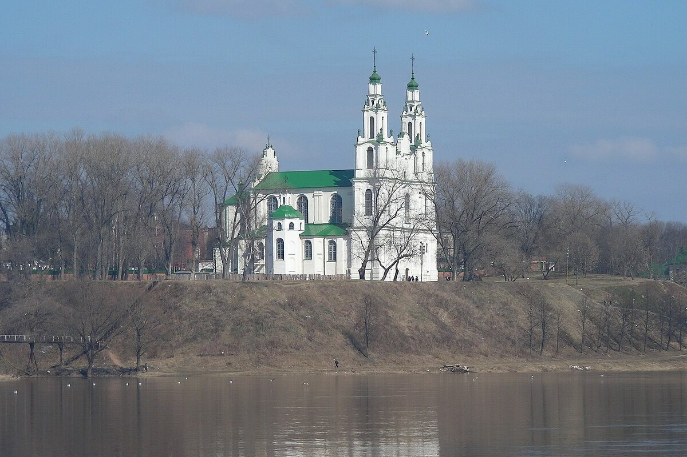
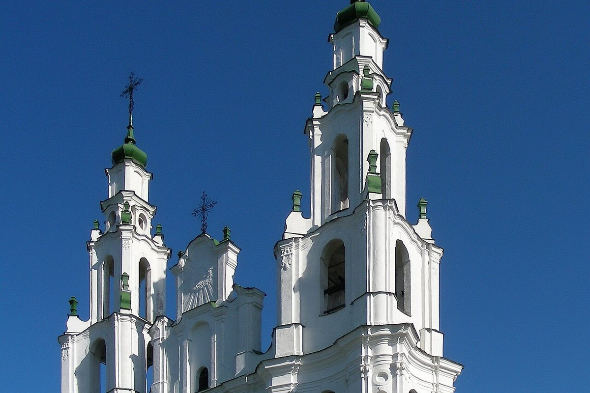

One of the oldest churches in Belarus, built under Vseslav of Polotsk. Today it is a museum and concert hall.
Saint Sophia Cathedral in Polotsk was built between 1044 and 1066 for Prince Vseslav Bryachislavich. It stood in the centre of the ancient citadel on the Upper Castle.
The cathedral was a symbol of Polotsk: envoys were received here, war and peace were declared, and the treasury, library and archive were kept here. Originally it was a cross-domed church with seven domes.
The cathedral was destroyed and rebuilt several times. In the late 15th and early 16th centuries it became a five-tower defensive church, and in 1738–1750 it was rebuilt in the Vilnius Baroque style by architect Johann Glaubitz.
From the ancient church, a three-part apse, fragments of walls and a crypt survive. Today the Museum of the History of St Sophia’s Architecture and a concert hall operate here.

